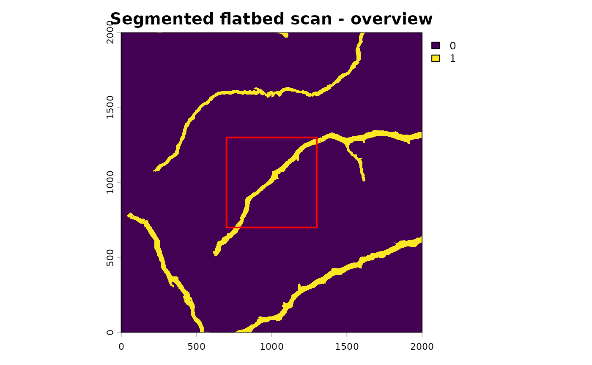
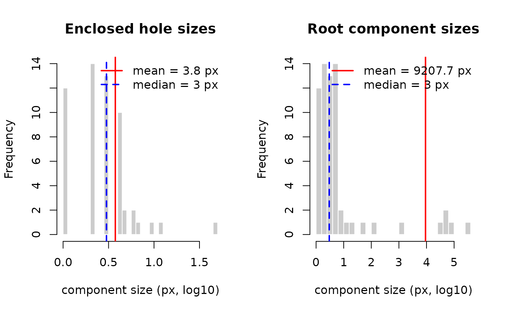
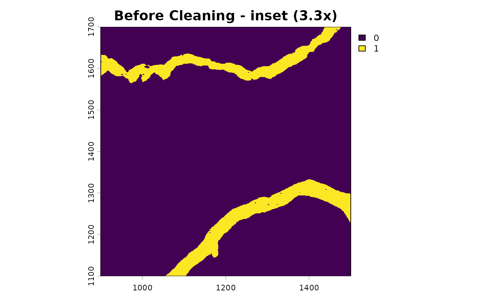
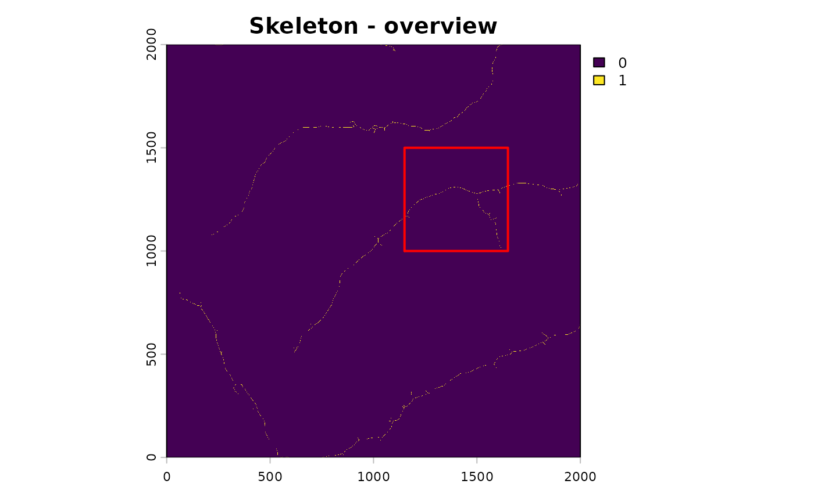
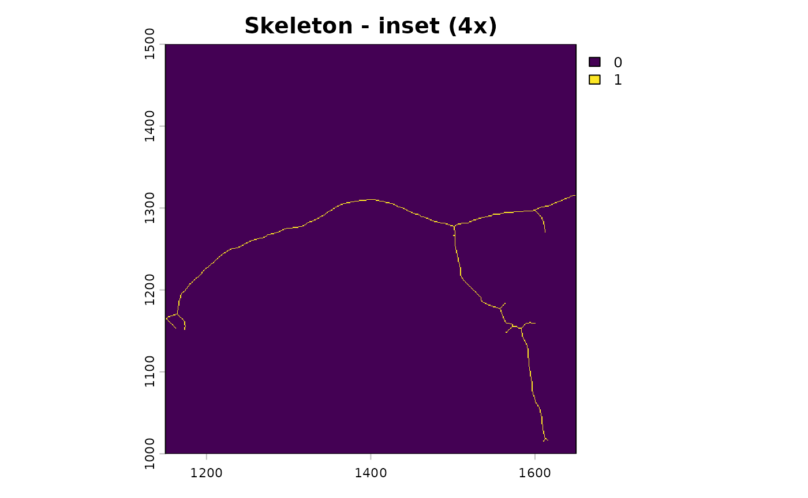
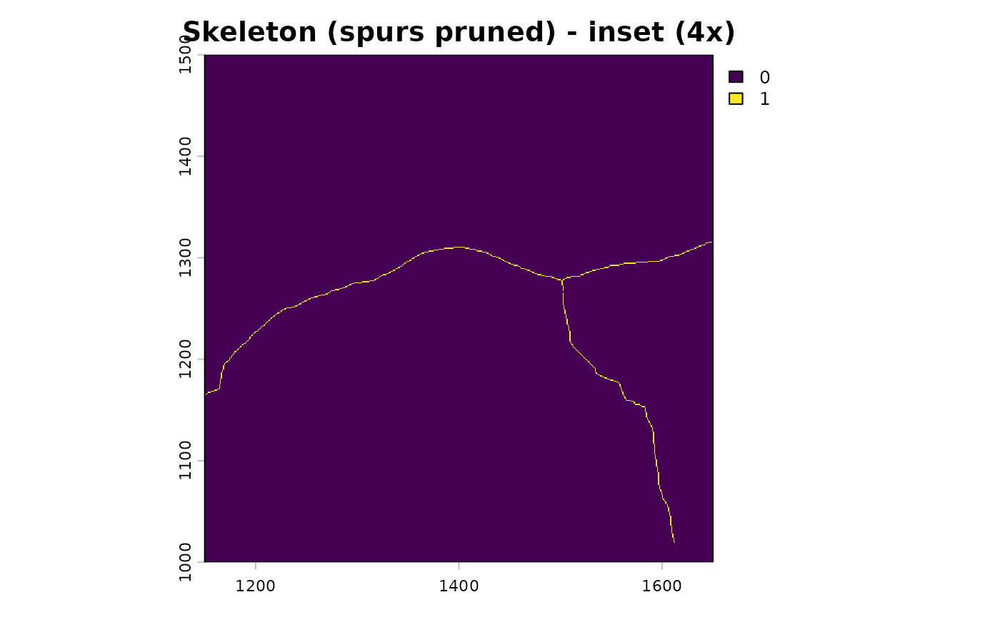
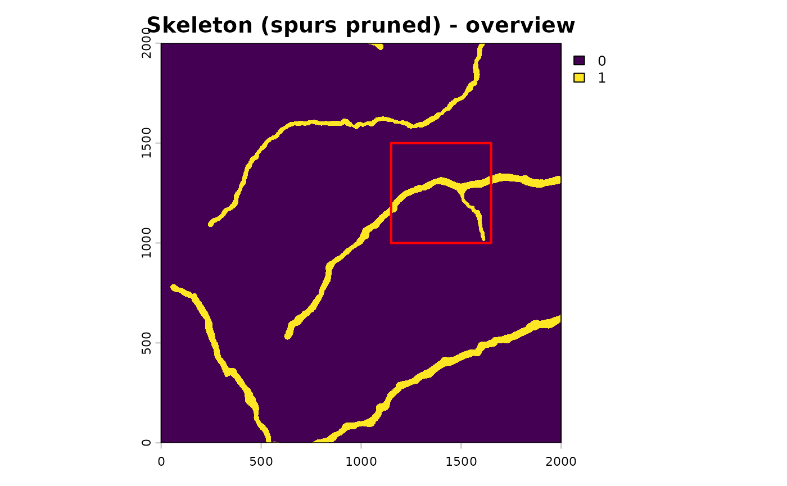
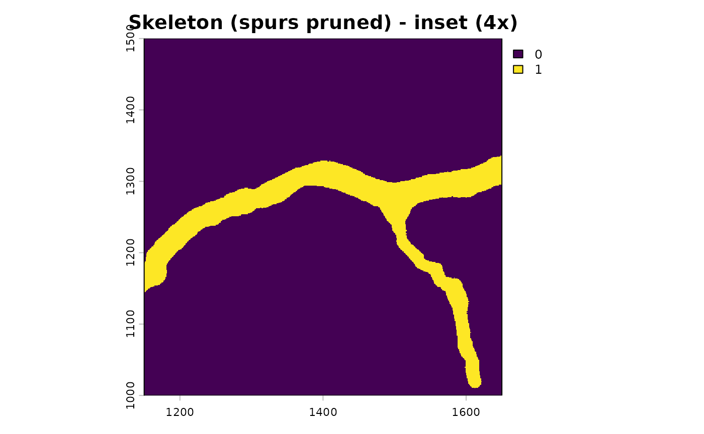
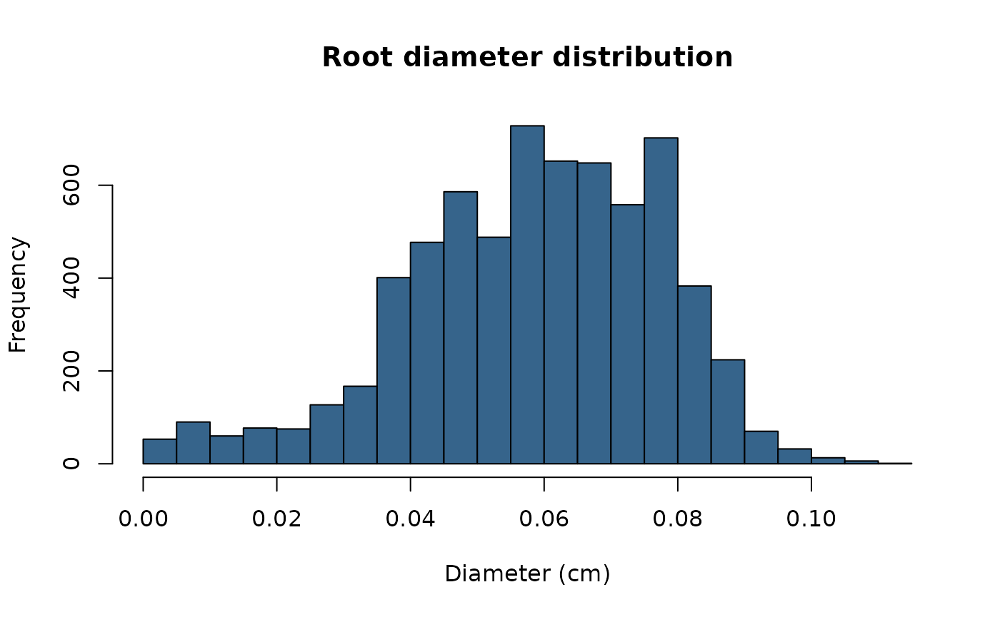

Analyzing Root Traits from Flatbed Scans with Rootopia in R
Johannes Cunow
Source:vignettes/FlatBedScans_vignettes.Rmd
FlatBedScans_vignettes.RmdAnalyzing Root Systems from Flatbed Scans
Introduction
Flatbed scanning captures root morphology in a 2D plane with high resolution and controlled lighting. Unlike minirhizotron images, flatbed scans have no depth dimension — the full root system is visible at once and traits are computed globally rather than per depth bin.
This vignette covers the individual-function workflow for flatbed images. If you are working with minirhizotron tubes and want a single-call batch approach, see the Batch Processing vignette instead.
Prerequisite: Rootopia works with already-segmented images (root = 1, background = 0). Segmentation must be done beforehand using RootDetector or RootPainter.
Installation
# install.packages("remotes")
# remotes::install_github("jcunow/Rootopia")
library(Rootopia)
library(terra)
library(tidyverse)Workflow
1. Load images
load_flexible_image() accepts rasters, arrays, file
paths, and most common image formats. The scale argument
controls value rescaling: "binary" forces 0/1,
"to_01" maps 0-255 down to 0-1, "to_255" maps
0-1 up to 0-255, and "none" leaves values untouched. This
is how you load your own files:
# Segmented image (binary: root = 1, background = 0)
seg <- load_flexible_image(
"path/to/segmented_scan.tif",
output_format = "spatrast",
scale = "binary",
select_layer = 2 # RootDetector: layer 2 is the root channel
)
# Original RGB scan for color analysis
rgb <- load_flexible_image(
"path/to/rgb_scan.tif",
output_format = "spatrast",
scale = "none"
)For this vignette we use the bundled example flatbed scan so every step below runs. It is a 3-band segmentation; layer 2 is the root channel.
data(flatbed_scan_example)
# Same call as above, but pointed at the bundled object instead of a file path:
# select_layer = 2 takes the root channel, scale = "binary" maps it to 0/1.
seg <- load_flexible_image(flatbed_scan_example, output_format = "spatrast",
scale = "binary", select_layer = 2)
zoom_plot(seg, main = "Segmented flatbed scan")
2. Clean the segmentation
Segmentation output usually carries two defect types: small
holes inside roots (gaps the model missed) and isolated
artifacts (false-positive specks). Both distort the
skeleton — a hole forces the medial axis to fork around it, a speck adds
a phantom branch. clean_image() fills holes and removes
artifacts in one pass.
Inspect the actual pixel counts first so the thresholds aren’t guesswork:
image_components = report_image_components(seg)
#> === Enclosed holes (background 0 surrounded by root 1) ===
#> n = 57 | min = 1 | median = 3 | mean = 3.8 | max = 45 (px)
#>
#> === Root components (connected root-1 regions) ===
#> n = 65 | min = 1 | median = 3 | mean = 9207.7 | max = 391995 (px)
Use those numbers to set max_hole_size (largest gap to
fill) and max_artifact_size (largest speck to delete).
Specks touching the image edge are removed by the same size test as
anywhere else — being at the border no longer protects an artifact. Set
protect_border = TRUE only if you have real roots leaving
the frame that you must keep.
seg_clean <- clean_image(seg,
max_hole_size = 50, # too small = not filling all the holes; too large = inflates area when roots overlap in a circle
max_artifact_size = 50, # too small = includes dirt; too large = removes genuine roots
protect_border = FALSE)
zoom_plot(seg, main = "Before Cleaning", center = c(0.6,0.7))
clean_image()expects a binary mask. If your input is a raw probability or grayscale image, binarize it withimage_threshold()first.
3. Skeletonize
skeletonize_image() reduces roots to single-pixel-wide
centerlines. This is required for root length (Kimura method) and
diameter estimation.
# `seg` is already the single root layer, so no select_layer needed here
skl <- skeletonize_image(seg_clean, verbose = FALSE)
# ! remember that 1 px skeletons may look less connected from far away
zoom_plot(skl, main = "Skeleton", frac = 0.25, center = c(0.7,0.625))

skeletonize_image() uses a LUT-based Zhang-Suen thinning
algorithm to reduce the segmented mask to one-pixel-wide
centerlines.
3b. Remove spurs (optional)
Thinning can leave short terminal “spurs” — stubs hanging off real
roots that inflate tip counts and branching.
prune_skeleton() removes terminal branches below a length
(or diameter) threshold. It operates on the skeleton graph but can
return either the cleaned skeleton or, with
output = "mask", a cleaned segmentation: each surviving
skeleton pixel is regrown by its local radius (from the distance
transform of mask) and clipped to mask, so the
spur’s body is removed from the segmentation too.
skl_pruned <- prune_skeleton(skl, mask = seg_clean, min_length = 50, iter = 1)
zoom_plot(skl_pruned, main = "Skeleton (spurs pruned)", frac = 0.25, center = c(0.7,0.625), overview = F )
# To clean the segmentation itself instead of the skeleton:
seg_clean <- prune_skeleton(skl, mask = seg_clean, min_length = 50,
output = "mask")
zoom_plot(seg_clean, main = "Skeleton (spurs pruned)", frac = 0.25, center = c(0.7,0.625), overview = T )

4. Root length
root_length() uses Kimura’s formula, which weights
orthogonal and diagonal skeleton segments differently to approximate
true path length.
rl <- root_length(skl_pruned, unit = "cm", dpi = 1200, select_layer = NULL,
method = "kimura2",
show_messages = TRUE)
#> Diagonal: 2461 | Orthogonal: 3507
cat("Total root length:", round(rl, 2), "cm\n")
#> Total root length: 14.04 cm5. Root diameter
root_diameter() estimates local root width from the
distance transform. It returns a diameter raster and the raw diameter
values.
diam_result <- root_diameter(
seg_clean,
skeleton_img = skl,
skeleton_method = "MAT",
select_layer = NULL,
unit = "cm",
dpi = 1200
)
# Summary statistics
diam_vals <- terra::values(diam_result$diameter_rast, na.rm = TRUE)
cat(sprintf(
"Diameter — mean: %.3f cm SD: %.3f cm max: %.3f cm\n",
mean(diam_vals), sd(diam_vals), max(diam_vals)
))
#> Diameter — mean: 0.058 cm SD: 0.019 cm max: 0.110 cm
# Distribution
hist(diam_vals,
breaks = 24,
xlab = "Diameter (cm)",
main = "Root diameter distribution",
col = "steelblue4")
For fine/coarse root separation, modal_peaks() can find
diameter modes in the distribution:
peaks <- modal_peaks(
diam_vals,
display_type = "density",
prominence_threshold = 2,
adjust = 1,
mclust = T, # mclust = TRUE uses gaussian mixture models to delineate clusters
G = 1:2 # either 1 or 2 cluster, BIC decides; can be NULL
)6. Pixel counts and area coverage
root_px <- count_pixels(seg)
void_px <- count_pixels(abs(seg - 1))
root_area_pct <- root_px / (root_px + void_px) * 100
cat(sprintf("Root area coverage: %.2f %%\n", root_area_pct))
#> Root area coverage: 5.16 %
# Root length density (cm root per cm² scan area)
scan_area_cm2 <- (root_px + void_px) / (300 / 2.54)^2
rl_density <- rl / scan_area_cm2
cat(sprintf("Root length density: %.4f cm / cm²\n", rl_density))
#> Root length density: 0.0490 cm / cm²7. Branching structure
detect_skeleton_points() classifies skeleton pixels into
endpoints (root tips) and branching points (forks).
# `skl` is a single-layer skeleton, so no select_layer is needed
pts <- detect_skeleton_points(skl, select_layer = NULL)
n_tips <- count_pixels(pts$endpoints)
n_forks <- count_pixels(pts$branching_points)
branch_freq <- n_forks / rl * 100 # branching points per 100 cm
# count_pixels() returns a numeric, so coerce to integer for %d formatting
cat(sprintf("Root tips: %d\n", as.integer(n_tips)))
#> Root tips: 67
cat(sprintf("Branching points: %d\n", as.integer(n_forks)))
#> Branching points: 155
cat(sprintf("Branching frequency: %.1f per 100 cm\n", branch_freq))
#> Branching frequency: 1103.8 per 100 cm7b. Branch order (main axis vs. laterals)
branch_order_map() goes one step further than
detect_skeleton_points(): it builds a full segment graph
from the skeleton and classifies every segment by branch
order — the thickest, most central root is order 1 (the main
axis), its laterals are order 2, their laterals order 3, and so on.
Because flatbed scans have no depth dimension, this is computed once for
the whole image.
order_res <- branch_order_map(
skel = skl, # skeleton from step 2
mask = seg, # filled root mask, same grid — used for diameters
order = "branch_order",
unit = "cm",
dpi = 150
)
# One row per order class: total length, mean diameter, tips, branch points
order_res$summary
# Rasterised branch-order classes, aligned to the skeleton
zoom_plot(order_res$class_map, main = "Branch order")order_metrics() can split the architecture into the main
root(s) versus all laterals (selected by diameter, so it works
regardless of how many order classes were found):
main_vs_lateral <- order_metrics(order_res, focal = "thickest")
print(main_vs_lateral)
# Fraction of total root length that is lateral (order >= 2)
lateral_length_fraction <- main_vs_lateral$length_fraction[main_vs_lateral$group == "rest"]order_metrics() also accepts a numeric
focal to split one specific order class off from the
rest:
# Per-order-class table (same as order_res$summary)
order_metrics(order_res)
# Order 1 (main root) vs. everything else
order_metrics(order_res, focal = 1)To check the classification visually, write a color-coded overlay PNG, or re-plot a sub-window at native resolution for QC:
order_res2 <- branch_order_map(
skel = skl,
mask = seg,
order = "branch_order",
unit = "cm",
dpi = 300,
overlay_png = "branch_order_overlay.png",
keep_segments = TRUE
)
# Zoom into a 200x200 px window at 3x magnification
plot_order_window(
order_res2$edges, skl,
r_range = c(100, 300), c_range = c(100, 300),
scale = 3, file = "branch_order_window.png"
)For more control over crossing resolution, pruning of weak tips, and the continuation rule used to group segments into roots, see
?root_graph_pipeline(the engine behindbranch_order_map()).
8. Root-level landscape metrics
root_scape_metrics() applies landscape ecology metrics
to the binary root image, treating roots as “patches”. Useful for
characterising spatial complexity and connectivity.
lsm <- root_scape_metrics(
img = seg,
index_d = NA, # no depth index for flatbed scans
metrics = c("lsm_c_ca", "lsm_c_np", "lsm_c_enn_mn",
"lsm_c_area_mn", "lsm_l_ent")
)
print(lsm)9. Color analysis
tube_coloration() extracts mean chromatic coordinates
and HSV values from an RGB image. On flatbed scans this characterises
overall root pigmentation.
# Root pixels only
rgb_roots <- rgb
rgb_roots[seg == 0] <- NA
root_color <- tube_coloration(rgb_roots)
print(root_color)
# Background (soil / petri dish) pixels
rgb_bg <- rgb
rgb_bg[seg == 1] <- NA
bg_color <- tube_coloration(rgb_bg)
print(bg_color)10. Collecting results
results <- data.frame(
sample_id = "my_scan",
root_length_cm = rl,
root_area_pct = root_area_pct,
rl_density_cm_cm2 = rl_density,
n_tips = n_tips,
n_forks = n_forks,
branching_freq = branch_freq,
mean_diameter_cm = mean(diam_vals),
sd_diameter_cm = sd(diam_vals),
lateral_length_fraction = lateral_length_fraction,
n_root_orders = max(order_res$edges$branch_order, na.rm = TRUE)
)
write.csv(results, "flatbed_results.csv", row.names = FALSE)What to read next
- Minirhizotron Scans — adds depth mapping and per-bin analysis to the individual-function workflow
- Batch Processing — wraps depth-resolved analysis into a single function call
- Function reference — full documentation for every exported function